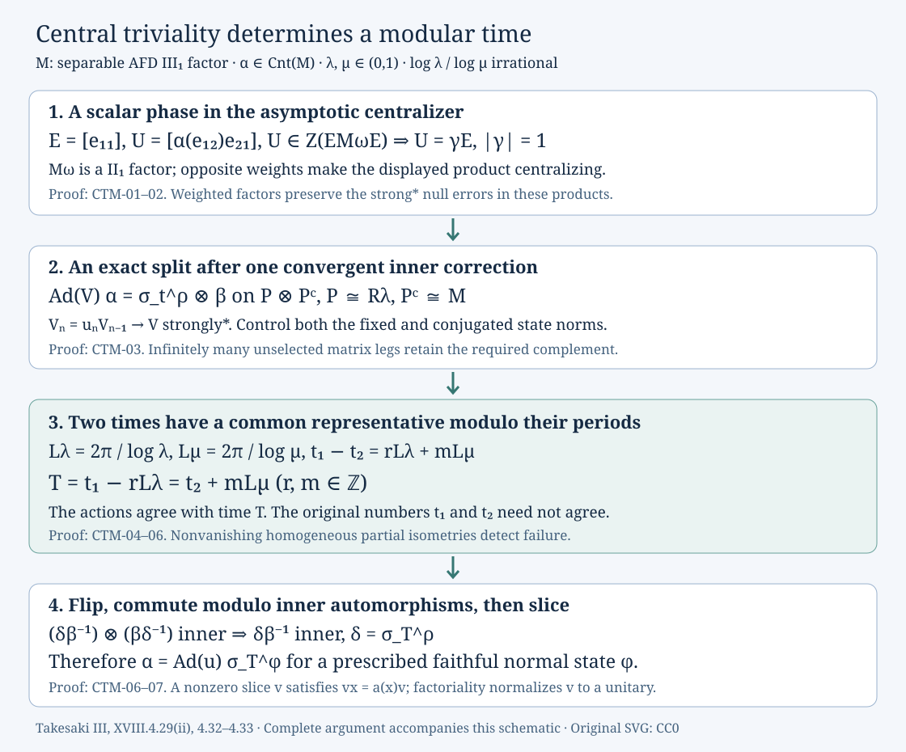

Centrally trivial automorphisms and modular time
An automorphism is centrally trivial if it leaves every bounded centralizing sequence unchanged up to a strong* null sequence. On the separable approximately finite-dimensional factor of type III₁, these automorphisms are precisely inner automorphisms composed with modular times. We prove the classification, including the phase extraction, the convergent inner correction, and the arithmetic that reconciles two modular periods.
The earlier approximate-innerness theorem, 7. Remove the distant action and finish the theorem supplies the other half of the automorphism theorem. Its proof does not use the centrally trivial classification proved here. The source comparison is Masamichi Takesaki, Theory of Operator Algebras III, Chapter XVIII, Theorem 4.29(ii) and Lemmas 4.32–4.33, printed pages 400 and 403–407. We retain the full separable-predual hypotheses and give the common-time adjustment explicitly: the initially chosen times need not literally coincide.
1. Central triviality and weighted sequence calculus
Throughout, \(M\) has separable predual. Fix a faithful normal state \(\varphi\), and use
\[ \begin{gathered} \|x\|_{\varphi,\#}^2 =\tfrac12\bigl(\varphi(x^*x)+\varphi(xx^*)\bigr),\\ (x\psi)(z)=\psi(zx),\quad (\psi x)(z)=\psi(xz). \end{gathered} \tag{CTM.1} \]On bounded sets the first seminorm tests strong* convergence, by 1. The product and the sequence conventions. A bounded sequence \(x_n\) is centralizing if \(\|\psi x_n-x_n\psi\|\to0\) for every \(\psi\in M_*\). Let \(\operatorname{Cnt}(M)\) consist of the automorphisms \(\alpha\) such that \(\alpha(x_n)-x_n\to0\) strongly* for every such sequence.
Normal automorphisms carry centralizing sequences to centralizing sequences and preserve bounded strong* null sequences: pull back the functional tests. Thus \(\operatorname{Cnt}(M)\) is a normal subgroup. For the inverse, apply the defining assertion to \(\alpha^{-1}(x_n)\); composition and conjugation follow by splitting their differences. Inner automorphisms belong to it because centralizing sequences commute strongly* with every fixed operator, as proved in 2. Which products preserve a small error.
Modular times belong to this subgroup. If \(x_n\) is centralizing, apply 5. Moving functionals and modular eigenvectors, Corollary 5.2 with weight ratio one to \(x_n\), and then to \(x_n^*\). Both functional defects vanish. The two vector estimates give
\[ \|\sigma_t^\varphi(x_n)-x_n\|_{\varphi,\#}\longrightarrow0 \quad(t\in\mathbb R). \tag{CTM.2} \]The bounded faithful-state test proves strong* convergence. Changing the faithful normal state changes a fixed modular time by an inner automorphism, by the fully constructed cocycle in Entry maps form relative flows, equation (BF.6).
We shall also use sequences with a positive weight \(c\):
\[ \|\psi a_n-c a_n\psi\|\longrightarrow0 \quad(\psi\in M_*),\qquad \sup_n\|a_n\|<\infty. \tag{CTM.3} \]All the following arguments work with ordinary limits or with limits along a fixed free ultrafilter \(\omega\). Adjoints have reciprocal weight, by taking adjoints of the functional identity. Products of sequences of weights \(c,d\) have weight \(cd\), since
\[ \psi ab-cd\,ab\psi =(\psi a-ca\psi)b+ca(\psi b-db\psi). \tag{CTM.4} \]In particular, opposite weights cancel to give a centralizing sequence. A fixed automorphism preserves the weight condition by predual pullback.
Fixed operators and moving null errors. Put \(D(\psi,a)=\psi a-ca\psi\). For a fixed \(x\in M\),
\[ D(\psi x,a_n)-D(\psi,a_n)x=\psi[x,a_n]. \tag{CTM.5} \]The norm tends to zero. Testing at \([x,a_n]^*\) gives \(\varphi([x,a_n][x,a_n]^*)\to0\). Apply the same argument to \(x^*,a_n^*\) to obtain the other square. Thus weighted sequences commute strongly* with each fixed operator.
They also normalize bounded strong* null sequences. Here are the estimates that justify this stronger assertion. Suppose \(z_n\to0\) strongly* and both sequences have norm at most \(K\). With \(\delta_n=\|\varphi a_n-ca_n\varphi\|\),
\[ \begin{aligned} \varphi(a_nz_nz_n^*a_n^*) &\le c\left|\varphi(z_nz_n^*a_n^*a_n)\right|+K^3\delta_n,\\ \left|\varphi(z_nz_n^*a_n^*a_n)\right| &\le K^3\varphi(z_nz_n^*)^{1/2}. \end{aligned} \tag{CTM.6} \]The first line is the functional defect tested at \(z_nz_n^*a_n^*\); the second is Cauchy–Schwarz and \((z_nz_n^*)^2\le K^2z_nz_n^*\). The other square of \(a_nz_n\) is at most \(K^2\varphi(z_n^*z_n)\). Apply these two estimates to \(a_n^*,z_n^*\), whose weight is \(c^{-1}\), to handle \(z_na_n\). Both products are strong* null. The bounds are valid along \(\omega\) as well. Small bounded strong* null sequences are themselves centralizing by ECA-02. Consequently all subsequent products modulo null sequences are justified by (CTM.4)–(CTM.6), including products containing noncentral weighted matrix units.
Ordinary central triviality implies triviality on every \(M_\omega\). Use the asymptotic centralizer and its trace constructed in 1. The product and the sequence conventions. If \((x_n)\) is centralizing along \(\omega\) but \(\|\alpha(x_n)-x_n\|_{\varphi,\#}\not\to_\omega0\), some positive lower bound holds on a set in \(\omega\). Choose increasing indices \(n_j\) in its intersection with the first \(j\) centralizing tests, each with error below \(1/j\), and a cofinite cutoff. The tests come from a countable norm-dense subset of \(M_*\). Uniform module bounds extend their ordinary convergence to every normal functional. Thus \(x_{n_j}\) is ordinarily centralizing and still violates central triviality. This contradiction shows
\[ \alpha\in\operatorname{Cnt}(M)\quad\Longrightarrow\quad \alpha_\omega=\mathrm{id}_{M_\omega}. \tag{CTM.7} \]No countable intersection of ultrafilter sets is used.
2. A scalar phase in a factorial corner
Now let \(M\) be AFD of type III₁ with separable predual, and \(\alpha\in\operatorname{Cnt}(M)\). Fix \(0<\lambda<1\). The absorption theorem 5. Strong λ-stability of an AFD type III₁ factor gives an actual normal tensor decomposition
\[ M=P_0\overline\otimes C_0,\qquad P_0\cong R_\lambda,\quad C_0\cong M. \tag{CTM.8} \]Use the stationary matrix legs \(e_{ij}(k)\) of \(P_0\) with density \(\operatorname{diag}(1,\lambda)/(1+\lambda)\). This is the reversed basis of UNI-02. Thus their weights are \(c_{ij}=\lambda^{i-j}\). The local product functional calculation in 7. A corrected tensor-factor conjugacy statement proves (CTM.3) for every functional on the whole \(M\), not just its product state. In particular the two diagonal sequences are centralizing.
Fix a free \(\omega\), and write \([a]\) for the class of a centralizing sequence in \(M_\omega\). Set
\[ E=[e_{11}],\qquad U=[\alpha(e_{12})e_{21}]. \tag{CTM.9} \]The second product is centralizing by cancellation of the weights \(\lambda^{-1},\lambda\). Equation (CTM.7) gives \(\alpha(e_{ii})-e_{ii}\to_\omega0\) strongly*. Multiplying these differences only by the weighted sequences allowed in (CTM.6), the matrix relations give
\[ U^*U=UU^*=E,\qquad EU=UE=U. \tag{CTM.10} \]For example \(e_{12}\alpha(e_{22})e_{21}-e_{11}\) is null; the analogous calculation with \(\alpha(e_{12}),\alpha(e_{21})\) gives the other product. The trace of \(E\) is \(1/(1+\lambda)>0\), computed with any faithful product state in (CTM.8).
Take \(X\in EM_\omega E\), with a bounded centralizing representative \(x_k=e_{11}(k)x_ke_{11}(k)\); compressing any representative gives this one. Define \(y_k=e_{21}(k)x_ke_{12}(k)\). It is centralizing by (CTM.4), and
\[ x_ke_{12}(k)=e_{12}(k)y_k,\qquad y_ke_{21}(k)=e_{21}(k)x_k. \tag{CTM.11} \]Since both \(x\) and \(y\) are fixed by \(\alpha\) modulo null sequences, (CTM.6) permits the following computation:
\[ XU=[\alpha(xe_{12})e_{21}] =[\alpha(e_{12})ye_{21}]=UX. \tag{CTM.12} \]The full 7. The AFD type III₁ theorem theorem says \(M_\omega\) is a II₁ factor. Its nonzero corner \(EM_\omega E\) is a factor. To see the relevant general fact, if a central projection \(q\) of a corner \(EAE\) has both \(q\) and \(E-q\) nonzero, then \(qA(E-q)=0\). The supremum of unitary conjugates of \(q\) in a factor \(A\) is its central support, namely one; the displayed vanishing would make that supremum orthogonal to \(E-q\), a contradiction. A nonscalar central self-adjoint element would have such a spectral projection. Hence the corner center is scalar.
Equations (CTM.10)–(CTM.12) now give \(U=\gamma E\), with \(|\gamma|=1\). Multiplying by the weighted sequence \(e_{12}\) gives
\[ \alpha(e_{ij}(k))-\gamma^{\,j-i}e_{ij}(k) \longrightarrow_\omega0\quad\hbox{strongly*},\qquad i,j=1,2. \tag{CTM.13} \]For \(i=1,j=2\), use \(\alpha(e_{12})e_{22}-\alpha(e_{12})\), which is null by the diagonal relation; adjunction gives the other off-diagonal entry. A finite-test extraction produces an increasing ordinary subsequence on which all four limits hold in \(\|\cdot\|_{\varphi,\#}\), hence strongly*. The same phase \(\gamma\) works throughout that subsequence.
3. Summable inner correction and a retained complement
We strengthen (CTM.13) to exact equalities using one limiting unitary. Suppose a unitary \(V_{n-1}\) already gives the exact equalities on selected legs \(k_1<\cdots<k_{n-1}\). For later indices in the ordinary subsequence put
\[ g_{ij}(k)=V_{n-1}\alpha(e_{ij}(k))V_{n-1}^*,\qquad f_{ij}(k)=\gamma^{\,j-i}e_{ij}(k). \tag{CTM.14} \]Both systems lie in \(L=D'\cap M\), where \(D\) is the full matrix algebra generated by the already selected target legs. They have the same weights and satisfy \(g_{ij}(k)-f_{ij}(k)\to0\) strongly*: use (CTM.13) and the fixed-operator commutation from (CTM.5) with \(V_{n-1}\). The finite matrix decomposition \(M=D\overline\otimes L\), separability of \(L_*\), and restriction of weighted functional tests are proved in 4. Preserve old matches in a relative commutant.
The two diagonal sequences have the same projection class \(F=[f_{11}]=[g_{11}]\) in \(L_\omega\). Their coordinate projections are equivalent inside \(L\). Indeed each lies in a unital Powers product contained in \(L\), generated by its later matrix legs, and is equivalent to that product's identity by the countably decomposable type III projection comparison used in 3. Exact lifts and cancellation of opposite weights. Apply exact endpoint lifting, Theorem 5.1 inside \(L\), with the partial isometry \(F\) itself. It supplies a centralizing sequence \(w_k\) with
\[ \begin{gathered} w_k^*w_k=g_{11}(k),\qquad w_kw_k^*=f_{11}(k),\\ w_k-g_{11}(k)\longrightarrow_\omega0\text{ strongly*}. \end{gathered} \tag{CTM.15} \]The balanced matrix expression
\[ u_k=\sum_{j=1}^2 f_{j1}(k)w_kg_{1j}(k) \tag{CTM.16} \]is a unitary in \(L\), and \(u_kg_{ij}(k)u_k^*=f_{ij}(k)\), by the exact multiplication in WMC-03. More particularly \(u_k-1\to_\omega0\) strongly*: replace \(w_k\) by \(g_{11}(k)\), then the \(g\)'s by the \(f\)'s, using (CTM.6) at each replacement. The resulting sum is \(\sum_j f_{jj}=1\). Strong* convergence in \(L\) implies the intrinsic strong* convergence in \(M\) through its normal inclusion; equivalently restrict the normal positive functionals from \(M\).
Select one coordinate, call it \(k_n\), with \(k_n>k_{n-1}+1\) and
\[ \|u_n-1\|_{\varphi,\#}<2^{-n-2},\qquad \|u_n-1\|_{\varphi\circ\operatorname{Ad}(V_{n-1}^*),\#}<2^{-n-2}. \tag{CTM.17} \]Both states are fixed during this selection. Put \(V_n=u_nV_{n-1}\), starting from \(V_0=1\). It preserves every old match because \(u_n\in L\). If \(d_n=u_n-1\), the two squares of \(V_n-V_{n-1}=d_nV_{n-1}\) are tested by
\[ \varphi(V_{n-1}^*d_n^*d_nV_{n-1}),\qquad \varphi(d_nd_n^*). \tag{CTM.18} \]Thus (CTM.17) gives a summable bound on \(\|V_n-V_{n-1}\|_{\varphi,\#}\). The first square is why the moving conjugated state cannot be omitted. The complete unitary metric proved in Central sequences and free-group factors, Lemma 2.2 gives a strong* unitary limit \(V\). Equivalently both \(V_n\Omega\) and \(V_n^*\Omega\) are Cauchy, their norm bounds extend the limits to the dense commutant orbit, and multiplication of the two bounded strong limits gives a unitary.
Every selected exact equality survives this limit. Let \(P\) be the product over the selected legs and \(\rho\) its stationary state. Choose \(t\in\mathbb R\) with \(\gamma=\lambda^{-it}\). The product modular formula Faithful states and maximal modular domains is
\[ \sigma_t^\rho(e_{ij}(k_n)) =\lambda^{it(i-j)}e_{ij}(k_n)=\gamma^{\,j-i}e_{ij}(k_n). \tag{CTM.19} \]Therefore \(\operatorname{Ad}V\circ\alpha\) agrees with \(\sigma_t^\rho\) on \(P\). It preserves the commutant and splits as \(\sigma_t^\rho\otimes\beta\). There are infinitely many unselected legs by our cutoff, so its actual complement is
\[ P^c\cong R_\lambda\overline\otimes C_0\cong M,\qquad M=P\overline\otimes P^c. \tag{CTM.20} \]The first identification reindexes the unselected pointed tensor legs; the second uses UNI-05. No tensor cancellation or unrestricted tensor-factor conjugacy is used.
Finally \(\beta\in\operatorname{Cnt}(P^c)\). A centralizing sequence \(x_n\) in \(P^c\) gives \(1\otimes x_n\) centralizing in \(M\): check product functionals, then their norm-dense span as in 2. Compare the full center-valued traces. Restrict the strong* difference for the centrally trivial map \(\operatorname{Ad}V\circ\alpha\) to this tensor factor. We have proved the full splitting assertion of Lemma 4.32, with an exact modular restriction after one inner correction.
4. Homogeneous partial isometries of nonvanishing size
Here \(P=R_\lambda\) with the stationary state \(\phi\) from Section 2. The centralizer \(F=P_\phi\) is a finite factor: \(\phi|_F\) is a faithful normal tracial state by its defining identity, and 2. Centralizer irreducibility by a block swap proves \(F'\cap P=\mathbb C\). Finiteness also follows directly: if \(u\in F\) has \(u^*u=1\), traciality gives \(\phi(1-uu^*)=0\), so faithfulness gives \(uu^*=1\). Elements of \(F\) are fixed by the modular group: apply AI-05 to their constant sequences, whose functional defects are zero, and use the separating state vector. Write \(\tau=\phi|_F\).
This factor has no minimal projections. Products of \(r\) copies of \(e_{11}\) belong to \(F\) and have traces \((1+\lambda)^{-r}\to0\). If \(p\in F\) were minimal, a nonzero such projection \(q\) with \(\tau(q)<\tau(p)\) would be equivalent to a subprojection of \(p\) by finite-factor trace comparison, FCT7. That subprojection must be \(p\), contradicting equality of traces. Every nonzero projection in \(F\) consequently has subprojections of arbitrarily small positive trace: repeatedly split a nonminimal projection and retain a nonzero part of at most half its trace.
Fix an integer \(k\ge1\), and put \(a=\lambda^k\in(0,1)\). A word of \(k\) distinct \(e_{21}\)'s gives a nonzero partial isometry \(v\) with
\[ \begin{gathered} \phi v=a v\phi,\quad \sigma_s^\phi(v)=a^{is}v,\\ e=v^*v\in F,\quad f=vv^*\in F,\quad \tau(f)=a\tau(e). \end{gathered} \tag{CTM.21} \]These identities hold on the whole algebra by the local product calculation and normality. If \(q,s\in F\) are nonzero projections, cut \(e\) to a nonzero \(e'\le e\) with \(\tau(e')\le\tau(q)\) and \(a\tau(e')\le\tau(s)\). Then \(f'=ve'v^*\in F\) has trace \(a\tau(e')\). FCT7 supplies partial isometries \(l,r\in F\) with
\[ l^*l=e',\quad ll^*\le q,\qquad r^*r=f',\quad rr^*\le s. \]The nonzero partial isometry \(rve'l^*\) has its initial projection under \(q\), final projection under \(s\), and the same two homogeneous identities (CTM.21), since \(l,r\) are in the centralizer.
For any nonzero \(r_0\in F\), choose a maximal family of such homogeneous partial isometries in \(r_0Pr_0\), with separately orthogonal initial and final projections. Maximality exists by taking unions of chains. The family is countable, since the faithful finite trace is positive on every nonzero initial projection. The orthogonal sum \(u\) converges strongly*, is a partial isometry, and retains the functional and modular identities: bounded strong* multiplication gives predual norm convergence for each fixed normal functional by 2. Which products preserve a small error, and modular automorphisms are normal and strong* continuous on bounded sets. If \(q=r_0-u^*u\ne0\), the final remainder \(s=r_0-uu^*\) has trace
\[ \tau(s)=\tau(r_0)-a\tau(u^*u)\ge(1-a)\tau(r_0)>0. \]The preceding construction with initial support in \(q\) and final support in \(s\) would add another family member. Therefore
\[ u^*u=r_0,\qquad uu^*\le r_0,\qquad \tau(uu^*)=a\tau(r_0). \tag{CTM.22} \]Here the partial isometry belongs to \(sPq\) when its initial support is in \(q\) and final support in \(s\).
Repeat (CTM.22) in the residual projections. This gives \(u_j\in P\), with initial projections \(r_j=1-\sum_{i<j}e_i\), final projections \(e_j=u_ju_j^*\le r_j\), and
\[ \phi u_j=a u_j\phi,\qquad \phi(r_j)=(1-a)^{j-1},\quad \phi(e_j)=a(1-a)^{j-1}. \tag{CTM.23} \]In \(Q=R_\mu\), with its stationary state \(\psi\) and \(b=\mu^\ell\in(0,1)\), construct \(v_j\) in the same way, with initial supports \(s_j\), final supports \(f_j\), and masses \((1-b)^{j-1},b(1-b)^{j-1}\). Then
\[ W=\sum_{j\ge1}u_j\otimes v_j^* \tag{CTM.24} \]is a strong* sum of partial isometries with pairwise orthogonal initial supports \(r_j\otimes f_j\) and pairwise orthogonal final supports \(e_j\otimes s_j\). Thus it is a partial isometry of norm one. Put \(\eta=\phi\otimes\psi\). Exact functional homogeneity and the geometric sums give
\[ \begin{gathered} \eta W=(a/b)W\eta,\qquad (\sigma_T^\phi\otimes\mathrm{id})(W)=a^{iT}W,\\ \eta(W^*W)=\frac b{a+b-ab},\qquad \eta(WW^*)=\frac a{a+b-ab},\\ \|W\|_{\eta,\#}^2=\frac{a+b}{2(a+b-ab)}\ge\frac12. \end{gathered} \tag{CTM.25} \]For example the first mass is \(\sum_{j\ge1}b((1-a)(1-b))^{j-1}\). The lower bound prevents the later centralizing sequence from disappearing strongly*. A single small spectral matrix word would not supply this bound.
5. The exact arithmetic condition on a modular time
Let \(0<\lambda,\mu<1\), with irrational \(a_0=\log\lambda/\log\mu\), and set the signed periods
\[ L_\lambda=\frac{2\pi}{\log\lambda},\qquad L_\mu=\frac{2\pi}{\log\mu}. \tag{CTM.26} \]Their signs do not change the period subgroups. For the stationary product states on \(P=R_\lambda,Q=R_\mu\), we prove
\[ \sigma_T^\phi\otimes\mathrm{id}\in\operatorname{Cnt}(P\overline\otimes Q) \quad\Longleftrightarrow\quad T\in L_\lambda\mathbb Z+L_\mu\mathbb Z. \tag{CTM.27} \]The reverse implication is immediate from Section 1, with its hypotheses checked: if \(T=rL_\lambda+mL_\mu\), take \(T'=mL_\mu\). Then \(\sigma_T^\phi=\sigma_{T'}^\phi\), \(\sigma_{T'}^\psi=\mathrm{id}\), and their tensor product is the modular time \(\sigma_{T'}^{\phi\otimes\psi}\), which is centrally trivial.
For necessity, assume \(T\) is outside that subgroup. Let \(b_0=T\log\lambda/(2\pi)\), and take the closure \(B\) of the cyclic subgroup generated by \((a_0,b_0)\) in \((\mathbb R/\mathbb Z)^2\). The first projection of \(B\) is the whole circle. Indeed a closed subgroup of the circle is either finite or the whole circle: if it has positive elements arbitrarily close to zero, their integer multiples approximate every point; otherwise a least positive spacing makes it finite. Irrationality rules out the finite case.
If the kernel of that projection on \(B\) were trivial, the projection would be a continuous bijection from a compact space to a Hausdorff space, hence a homeomorphism. Thus \(B\) would be the graph of a continuous circle homomorphism \(f\). Every such homomorphism has the form \(f(x)=mx\), \(m\in\mathbb Z\). Here is the elementary lift argument. Near zero, choose the unique real representative \(F(t)\) of \(f(t)\) in a sufficiently small arc. For small \(s,t,s+t\), the homomorphism identity implies \(F(s+t)=F(s)+F(t)\), since their difference is an integer of absolute value less than one. A continuous locally additive real function is linear: subdivision gives its rational values and continuity gives all real values. Extending by subdivisions to a lift of \(f\) on the real line gives \(F(t)=mt\); period one forces \(m=F(1)\in\mathbb Z\). Consequently \(b_0-ma_0\in\mathbb Z\), contrary to the assumption on \(T\).
There is therefore a point \((0,x)\in B\) with \(x\ne0\) in the circle. It can be approached by positive iterates \(k_n(a_0,b_0)\), with \(k_n\to\infty\). To justify positivity, compact pigeonhole approximation of sufficiently many iterates gives positive \(q_j\) with \(q_j(a_0,b_0)\to0\). Their indices can tend to infinity because the irrational first coordinate makes every nonzero fixed iterate different from zero. Then \(q_j-m\) approximates the negative iterate \(-m\), so the closure of the positive orbit contains the whole cyclic group and its closure. Removing finitely many iterates has the same closure, permitting arbitrarily large \(k_n\).
Choose integers \(\ell_n\) with \(k_na_0-\ell_n\to0\). Since \(a_0>0\), both \(k_n,\ell_n\) are eventually positive and tend to infinity. Thus
\[ \lambda^{k_n}\mu^{-\ell_n}\longrightarrow1,\qquad \lambda^{ik_nT}\longrightarrow\zeta=e^{2\pi ix}\ne1. \tag{CTM.28} \]Reindexing the identical matrix sites gives state-preserving normal identifications of each of \((P,\phi),(Q,\psi)\) with a countable product of copies of itself. This is the pointed tensor argument in 4. An exact product of identical replicas, applied to the two-state matrix product instead of its four-state pairing. Put the operator from Section 4 with \(a=\lambda^{k_n}\), \(b=\mu^{\ell_n}\) in replica \(n\), and call it \(W_n\). It is bounded by one and satisfies
\[ \|\eta W_n-W_n\eta\|\le\bigl|\lambda^{k_n}\mu^{-\ell_n}-1\bigr|. \tag{CTM.29} \]For a normal functional consisting of a coefficient on finitely many matrix sites and the product state elsewhere, the same bound holds times the norm of that coefficient, once replica \(n\) misses those sites. Such coefficients have norm-dense span by Tail expectations and the full commutant and Every tensor vector is a summable vector series through The concrete predual and its intrinsic norm. The common bound two on the commutator maps then proves that \(W_n\) is ordinarily centralizing for every normal functional. But (CTM.25) and (CTM.28) give
\[ \bigl\|(\sigma_T^\phi\otimes\mathrm{id})(W_n)-W_n\bigr\|_{\eta,\#} \ge\frac{|\lambda^{ik_nT}-1|}{\sqrt2}\not\longrightarrow0. \tag{CTM.30} \]This contradicts central triviality and proves (CTM.27).
For arbitrary AFD type \(\mathrm{III}_\lambda,\mathrm{III}_\mu\) factors with separable predual, 4. Identifying every injective type IIIλ factor, together with AFD injectivity as used there, identifies them normally with the specified Powers products. For arbitrary faithful normal states on these factors, BF-01 expresses each fixed modular time as an inner perturbation of the product-state time. Since inner automorphisms are centrally trivial and tensor products of inner automorphisms are inner, (CTM.27) remains valid. Moreover, when it holds, \(\sigma_T^\phi\otimes\mathrm{id}\) equals a common modular time \(\sigma_{T'}^\phi\otimes\sigma_{T'}^\psi\) modulo an inner automorphism. This proves both parts of Lemma 4.33, including the initially inner case \(T\in L_\lambda\mathbb Z\).
6. Matching two times and reducing to a tensor flip
Apply Section 3 to \(\alpha\in\operatorname{Cnt}(M)\) with \(\lambda\), then apply it inside the retained complement with \(\mu\), choosing an irrational logarithm ratio. Extend the second correcting unitary through the first factor. After the resulting inner perturbation there is an exact decomposition
\[ \begin{gathered} M=P\overline\otimes Q\overline\otimes C,\qquad C\cong M,\\ \alpha_0=\sigma_{t_1}^{\phi}\otimes\sigma_{t_2}^{\psi}\otimes\beta,\qquad \beta\in\operatorname{Cnt}(C). \end{gathered} \tag{CTM.31} \]Here \(\phi,\psi\) are the actual stationary states from the two splittings. Restriction to \(P\overline\otimes Q\) is centrally trivial: embed any centralizing sequence in that tensor factor using the product-functional test from Section 3. Multiply this restriction by the centrally trivial modular time \(\sigma_{-t_2}^{\phi\otimes\psi}\). Equation (CTM.27) gives integers \(r,m\) with
\[ t_1-t_2=rL_\lambda+mL_\mu. \tag{CTM.32} \]Set
\[ T=t_1-rL_\lambda=t_2+mL_\mu. \tag{CTM.33} \]Then \(\sigma_{t_1}^{\phi}=\sigma_T^\phi\) and \(\sigma_{t_2}^{\psi}=\sigma_T^\psi\) exactly. The periods make this possible; (CTM.32) does not imply equality of the original numbers \(t_1,t_2\).
Put \(N=P\overline\otimes Q\) and \(\rho=\phi\otimes\psi\). By 6. A reference factor and tracial stability and 11. The three-factor comparison and uniqueness, \(N\cong M\cong C\). Choose a normal isomorphism from \(C\) to \(N\), transport \(\beta\) with it, and continue using that symbol. The transported automorphism on \(N\overline\otimes N\) is
\[ \theta=\delta\otimes\beta,\qquad \delta=\sigma_T^\rho,\qquad \theta\in\operatorname{Cnt}(N\overline\otimes N). \tag{CTM.34} \]The flip \(s(x\otimes y)=y\otimes x\) is approximately inner. One may use the explicit replica swap proof 5. Swapping two replicas is approximately inner; alternatively the full AIA-07 theorem applies, since the paired stationary model identifies \(N\overline\otimes N\cong N\), which is separable AFD III₁. No innerness of the infinite flip is asserted.
We use the complete earlier theorem Centrally trivial automorphisms and decreasing AFD factors, Theorem 1.2: a centrally trivial automorphism commutes modulo inner automorphisms with every approximately inner automorphism. Its proof constructs a strong* limit of unitaries using both moving-state estimates; it does not assume that the inner group is closed. Its hypotheses are precisely satisfied by \(\theta,s\). Therefore
\[ \theta s\theta^{-1}s^{-1} =(\delta\beta^{-1})\otimes(\beta\delta^{-1}) \in\operatorname{Inn}(N\overline\otimes N). \tag{CTM.35} \]The order is obtained by applying the four maps to \(x\otimes y\); it remains meaningful without commutation of \(\delta\) and \(\beta\).
7. Slice an implementer and finish the classification
Tensor innerness forces factor innerness. Let \(A,B\) be factors and \(a\in\operatorname{Aut}(A)\), \(b\in\operatorname{Aut}(B)\). Suppose \(a\otimes b=\operatorname{Ad}U\) for a unitary \(U\in A\overline\otimes B\). Then
\[ U(x\otimes1)=(a(x)\otimes1)U\quad(x\in A). \tag{CTM.36} \]A normal slice \(v=(\mathrm{id}\otimes\chi)(U)\) is nonzero for some \(\chi\in B_*\); otherwise all product normal functionals vanish on \(U\), contradicting the separating product-functional description in CP-04–06. The same slice of (CTM.36) gives \(vx=a(x)v\). Taking adjoints with \(x^*\) and multiplying shows \(v^*v\in Z(A)\) and \(vv^*\in Z(A)\), using surjectivity of \(a\) for the second conclusion. Both are the same positive scalar \(c1\), because each has norm \(\|v\|^2=c>0\). Consequently \(c^{-1/2}v\) is a unitary implementing \(a\). Interchanging factors proves the assertion for \(b\) as well. This argument requires a nonzero slice, not an invertible slice assumed in advance.
Apply it to (CTM.35). Then \(\delta\beta^{-1}\) is inner, so \(\beta=\operatorname{Ad}w\circ\delta\) for a unitary \(w\in N\): inversion and conjugation of an inner automorphism are inner. Hence
\[ \theta =\operatorname{Ad}(1\otimes w)\circ(\delta\otimes\delta) =\operatorname{Ad}(1\otimes w)\circ\sigma_T^{\rho\otimes\rho}. \tag{CTM.37} \]The tensor modular identity follows from the tensor Tomita construction in ITP-04 (or the same finite tensor graph argument for two faithful states). Transporting the state through the normal identifications in Section 6 and reversing the two earlier inner corrections gives a faithful normal state \(\chi\) on the original \(M\) and a unitary \(u\) with \(\alpha=\operatorname{Ad}u\circ\sigma_T^\chi\). Finally BF-01 replaces \(\chi\) by any prescribed faithful normal state \(\varphi\), absorbing its time-\(T\) cocycle into \(u\).
We have proved the full statement:
\[ \boxed{\operatorname{Cnt}(M) =\{\operatorname{Ad}u\circ\sigma_t^\varphi: u\in\mathcal U(M),\ t\in\mathbb R\}.} \tag{CTM.38} \]Here \(M\) is any AFD type III₁ factor with separable predual, and \(\varphi\) is any fixed faithful normal state on it. The reverse inclusion was proved in Section 1. Together with AIA-07 this proves both clauses of Takesaki XVIII.4, Theorem 4.29, at the stated hypotheses. Independent review and the audit of all recursive prerequisite chains remain separate obligations; writing this proof does not certify the whole course or those chains.
8. Mechanism and checks of the boundary cases

Figure. Sections 2–3 extract a scalar phase in \(EM_\omega E\) and make it exact with a summable strong* unitary product. Sections 5–6 replace two times by one common representative using their periods. Section 7 slices a tensor implementer to finish the classification. Arrows indicate these proved implications, not identifications of the original time parameters. The SVG retains the formulas and proof locators used here.
- A nonzero difference of times. Take \(t_1=L_\lambda\), \(t_2=0\), with the irrational logarithm ratio as before. The two initial numbers are different, yet both modular actions on their respective factors are the identity. Equation (CTM.33) gives \(T=0\). This refutes the unqualified inference \(t_1=t_2\), while checking the common-time construction.
- The mass estimate is uniform. If \(a=b\in(0,1)\), equation (CTM.25) gives \(\|W\|_{\eta,\#}^2=1/(2-a)\ge1/2\). Even if \(a\to0\), these operators cannot converge strongly* to zero. Their exact centralizer relation when \(a=b\) is also consistent with (CTM.29).
- Both sides of a unitary limit matter. In (CTM.18), controlling only \(\varphi(d_nd_n^*)\) leaves the conjugated-state square untreated. The complete unitary metric needs both. The construction uses state seminorms, not a claim that \(\|u_n-1\|\to0\) in operator norm.
- The arithmetic subgroup need not be closed. The additive group in (CTM.27) is countable and dense because its two periods have irrational ratio. The proof tests actual membership, using a centralizing sequence when membership fails. It never replaces that subgroup by its closure.
- Source and proof scope. The scalar-corner and splitting argument proves Lemma 4.32; the nonvanishing homogeneous operators and arithmetic prove Lemma 4.33; the common-time and slice argument proves Theorem 4.29(ii). The retained complement is computed in (CTM.20). The unrestricted Corollary 4.31, corrected and delimited in WMC-07, is not an input.
Original lesson and illustration: CC0-1.0 to the extent of rights held. The source comparison is Takesaki, Theory of Operator Algebras III (2003), XVIII.4, printed pages 400, 403–407. The source book and earlier authors' works retain their own rights.